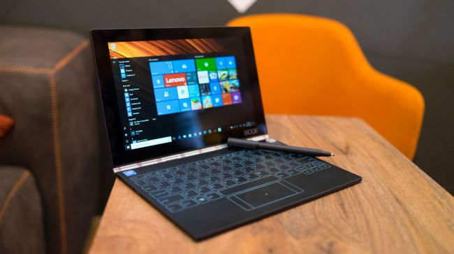

Lenovo has crafted a brilliant, forward-thinking device that could very well create a subcategory in computing all of its own.
But, with low-power components inside holding it back against the tablet competition, it’s tough to outright recommend you buy
the first generation.
Introduction
Welcome to the future of laptops and tablets alike – it’s a work in progress. This is the Yoga Book, a tablet that stands
to be the logical conclusion of Lenovo’s category-shifting Yoga design for laptop-tablet hybrids.
It’s a device that, unlike the firm’s previous Yoga 2-in-1 laptops and tablets, swaps the keyboard and touchpad for inputs
that are entirely digital. Yes, this is the first laptop with a 100% digital touch keyboard. And yes, it does feel weird
– at first – but more on that in a moment.
That’s not all: this is also the first tablet (laptop?) with a keyboard to double as a Wacom digitizer replete with an
included stylus. But, don’t stop there – this is also the first laptop (tablet?) with the ability to transfer characters
written in ink on paper to a digital screen.
And finally, this is the first laptop or tablet to come in both Windows 10 and Android varieties using the exact same
hardware inside.

That’s quite a lot of firsts for a 10.1-inch productivity device that costs just $499 (about £409, AU$655; Android) or
$549 (about £450, AU$720; Windows 10) to start. There has to be a catch, right?
Of course there is, but let’s focus on what makes the Yoga Book so awesome first, shall we?
Design
The Yoga Book, at first glance, looks like every other Lenovo Yoga laptop – only smaller. The impressive, gorgeous
watchband hinge first introduced with the Yoga 3 is present and correct, and the insanely thin device is wrapped in a smooth,
luxurious magnesium alloy shell like so many Yoga devices before it.
The Android version of the Yoga Book, which we guess Lenovo expects to sell more of, comes in Champagne Gold, Gunmetal Gray
and Carbon Black finishes. The Windows 10 version comes in just Carbon Black – though all of these finishes look downright
premium.
[Editor’s Note: This review focuses on the Windows 10 version of the Yoga Book, with salient differences
in the Android version noted.]
A power button and volume rocker on the device’s right side are edged in chrome, and speakers sit behind dotted grilles on
either side of the keyboard deck. The speakers pump out suitable range and volume despite their size, thanks to Dolby Atmos
technology inside.
Another impressive feature about the Yoga Book despite its size is the 10.1-inch, 1,920 x 1,200 resolution screen. With 400
nits of brightness and the capability to display a range of 16.7 million colors, HD movies look excellent on the Yoga Book,
and in-plane switching (IPS) means wide angles for screen sharing.
For those of you doubting whether an entirely digital, capacitive keyboard can cut the mustard, stop right now. In our time
with both versions of the Yoga Book and its Halo Keyboard, we were surprised by just how accurate we found typing without
any sort of physical buttons or feedback.
Sure, there’s haptic feedback and audio cues that signal when typing, like on a smartphone, which can be toggled on or off.
But, neither completely account for how accurate we are typing on this backlit digital keyboard, behind a sheet of Gorilla
Glass with individually lit keys.
If anything, our accuracy is testament to our growing aptitude with digital keyboards since the dawn of smartphones and
tablets – only this one doesn’t take up half the screen. (Lenovo’s patent-pending hardware and software helps a great deal
here, too.)
Even without auto-correct software on the Windows 10 version, we found ourselves making very few errors while working on
the Yoga Book. Of course, it’s unrealistic to expect the same words-per-minute speed that you would attain on an analog
keyboard, and we don’t expect everyone to have the same easy transition that we had. The Android version’s Lenovo-made
TouchPal auto-correct software should help a great deal with that acclimatisation.
This, then, brings us to a question: if all versions of Windows 10 are essentially the same operating system (OS), why
then is Windows 10 Mobile’s excellent auto-correct software not available on all versions of the OS?
At any rate, we found navigating and typing on the Yoga Book surprisingly easy after about an hour with the device. Of
course, you’ll find differences between both keyboards – i.e. the Windows 10 version’s left and right mouse buttons that
allow for click-and-drag and the Android version’s lack thereof – but both offer the same fidelity.
It’s fine enough that the Yoga Book is the first laptop or tablet to include a keyboard that doubles as a full-blown Wacom
digitizer. It’s even better that the tool is a joy to use, not to mention that it has one super-neat trick up its sleeve.
Pressing and holding a capacitive button above the keyboard with a pen icon switches the tool from displaying the keys to
displaying, well, nothing but an illuminated pen icon. This means you can now use the surface to draw or write with the
included Real Pen stylus.
Lenovo calls this the Create Pad, a layer of electromagnetic resonance (EMR) film beneath the keyboard that’s powered by
Wacom Feel technology. This means that the Real Pen needs nothing inside to operate, with the Create Pad doing all of the
work – even the 2,048 levels of pressure sensitivity.
The Create Pad offers the supreme palm detection artists have come to expect from the brand, and has differing levels of
support from the Yoga Book depending on the version. The Windows 10 version supports the Create Pad in all apps that would
support stylus control, like Windows Ink, but specifically calls up OneNote when activated.
On Android, however, Lenovo seems to have enjoyed a lot more freedom in custom-tailoring software for the OS, with Lenovo’s
home-grown Note Saver app for note-taking and drawing.
Regardless, both versions of the Yoga Book are capable of one aforementioned, seriously cool trick: taking scrawlings in
pen on paper and digitizing them for later access, editing and backup. This is made possible through an included magnetic
notepad that attaches itself to the Create Pad’s surface, and included (office-standard) real-ink ballpoint tips for the
Real Pen.
Now, this is where the EMR comes into play. As soon as the Real Pen touches the notepad – when attached to the Create Pad
surface – whatever’s written is picked up by the electromagnetic response given off by the contact of pen to paper through
the notepad’s magnetic rear surface, to be translated onto the screen via the Create Pad. The accuracy with which this is
achieved is incredible, and it’s something you simply have to see in action yourself to believe.
With this feature, you can even fold the tablet in the reverse direction to use it simply as a traditional paper notepad with
a digital backup. Using the tablet in this way even shuts the screen off, saving precious battery life – though, the Yoga Book
already has gobs of that.
But, beyond note-taking, we could see this feature being a boon for artists that feel more at home drawing on paper with ink
than a glass surface with a stylus, with the option to alter their work digitally later. Of course, this assumes a lot on the
front of app and file compatibility.
All told, the Yoga Book’s Create Pad and Halo Keyboard are wowing tools that separate this tablet from the majority of 2-in-1
devices. Even more so, they stand to see Lenovo spur yet another standard in dual-purpose computing devices.
But before we get ahead of ourselves, let’s see how this thing stacks up against some of the leading tablets, and what it’s
like to use as a productivity device.
Look, we aren’t being hyperbolic about just how thin the Yoga Book is. It’s one thing to call out the 9.6mm (0.38-inches; closed) figure, but it’s another thing entirely to see and feel the device. For Pete’s sake, if it was much thinner the tablet wouldn’t be able to fit the included audio jack.
We’re talking nigh-iPhone levels – by a tenth of an inch – of thickness on each end here, folks.
That said, the iPad Air 2 is noticeably slimmer than this at 6.1mm (0.24-inches), as is a comparable Windows tablet, like the Samsung Galaxy TabPro S at 6.3mm (0.25-inches). On the Android side, among the thinnest is the Google Pixel C, at 7mm (0.27-inches). All of these devices are also lighter than the Yoga Book (1.52 pounds; 690g) by tenths of a pound – with Apple’s leading slate unsurprisingly taking the lead in lightness by more than a half-pound.
Specifications
Now, let’s see what Lenovo managed to cram inside one of the year’s thinnest tablets. Here is the Lenovo Yoga Book configuration sent to us for review:
Operating System: Windows 10 Anniversary Edition or Android 6.0.1 Marshmallow
CPU: 1.44GHz Intel Atom x5-Z8550 (quad-core, 2MB cache, up to 2.4GHz with Turbo Boost)
Graphics: Intel HD Graphics 400
RAM: 4GB (LPDDR3)
Screen: 10.1-inch FHD (1,920 x 1,200 resolution), IPS touchscreen
Storage: 64GB flash storage (expandable by up to 128GB via microSD)
Ports: microUSB, microHDMI, 3.5mm audio jack
Battery: 8,500mAh
Connectivity: 802.11ac Wi-Fi (2.4 GHz and 5 GHz), optional 4G radio, Bluetooth 4.0
Camera: 2MP front-facing webcam with fixed focus; 8MP rear camera with auto-focus
Weight: 1.52 pounds (690g)
Size: 10.1 x 6.72 x 0.38-inches (256.6 x 170.8 x 0.96mm; W x D x H)
As you can see, Lenovo has leveraged the same hardware to work with both Windows 10 and Android Marshmallow, but there is a difference in pricing for each. While the Android version costs a flat $499 (about £409, AU$655), the Windows 10 model asks for another 50 bucks at $549 (about £450, AU$720).
This is likely due to the fact that Microsoft charges its manufacturing partners for use of its Windows 10 operating system, whereas Google doesn’t charge vendors to use Android.
At any rate, either edition of the Yoga Book is comparable in price to key competitors, like the iPad Air 2 and Google Pixel C. Samsung’s Windows 10 tablet is far more expensive than this lot, though it’s a 12-inch device stacked up with 10-inchers.
That said, the Yoga Book offers more in some areas than its rivals and less in others. For instance, Lenovo’s tablet offers more memory (RAM) and storage than its two like-sized competitors to start, though its screen isn’t nearly as sharp, and its processor isn’t as powerful either.
Then again, neither of the two offer the Yoga Book’s unique features, so it’s rather difficult to get anywhere near an apples-to-apples comparison between this device and any of its rivals.
For what this device offers in terms of original selling points over the competition, it’s excellent value. However, for everything unique about the Yoga Book, we’ve found it to be sorely lacking in power – so much so that it noticeably affects our experience using it.
Performance
In our time using the Yoga Book (primarily the Windows 10 version), we’ve found the tablet more than ready to play full HD videos, handle basic web browsing and act as a brilliant drawing device – both digitally and with its clever analog-to-digital approach.
Unfortunately, attempting much beyond those functions, like our typical workload of 10+ Google Chrome tabs and using the Slack app to communicate with teammates, quickly reveals the device’s rather low power ceiling. And boy, will you feel it.
For a tablet touted for its ability to keep users productive, it has quite a bit of trouble keeping up with what we think is a basic workload for a Windows 10 device designed for productivity.
Here’s how the Lenovo Yoga Book performed in our suite of benchmark tests:
Benchmarks
3DMark Cloud Gate: 2,098; Sky Diver: 830; Fire Strike: Not supported
While there isn’t much out there to compare most of these benchmarks against, we at least have Geekbench to bridge the gap between Windows 10, iOS and Android. Though, with both the iPad Air 2 and Pixel C’s multi-core processor results beating the Yoga Book by more than 1,000 points, that doesn’t do the Yoga Book any favors.
Clearly, the Yoga Book is a far worse performer in straight throughput against comparably-priced competitors. But, again, given that the Yoga Book is far from a straight-up tablet, we can’t fault the device too harshly for this.
What we can fault the Yoga Book for, however, is how this low power ceiling affects the entire experience when under such an aforementioned workload. Because the touch-based keyboard on offer here is an entirely digital affair, more of the CPU and RAM’s inherent overhead is dedicated to managing those input requests than is the case with an analog keyboard.
Regardless of how much overhead this actually amounts to, it’s woefully noticeable when, say, trying to write an email or even type a URL into the web browser while under such a workload as we mentioned above. The keyboard visibly lags behind our commands, and switching between typing and navigating via the touchpad takes more than a few presses before the touchpad responds.
Frankly, this isn’t the sort of experience we expect from a device that promises to keep us productive. Granted, the word ‘productive’ is subjective, but we think that the tasks that keep us specifically productive shouldn’t be out of reach of a $550 (about £450, AU$720) device.
All told, if your workload is anything like what we’ve described above, don’t expect to be able to get it done on the Yoga Book without a bit of frustration. Here’s hoping Lenovo can address this somewhat through firmware patching – but, you can only push an Atom processor so far. That said, so long as you manage your expectations for what kind of work you can get done with the Yoga Book, your time with it might just be delightful.
Battery Life
What every user of the Yoga Book will be undoubtedly delighted by is the tablet’s lengthy battery life. Lenovo claims the tablet is good for up to 15 hours of life with general usage from its whopping 8,500mAh battery. Of course, vendor projections rarely, if ever, line up with real-world results, but the Yoga Book’s longevity is nevertheless impressive.
The PCMark 8 battery test, which simulates several computing tasks that we’d consider ‘general use’, put up a result of 8 hours and 32 minutes. That’s a far cry from 15 hours, but nevertheless it’s impressive for a Windows 10 tablet, much less any other.
In our anecdotal battery test, which plays a 1080p video on loop at 50% brightness and 50% volume, the Yoga Book lasted a cool 7 hours and 43 minutes. That’ll easily cover any national flight and some international.
Almost regardless of the task, you can expect the Yoga Book to last for an entire day’s worth of work (or play). Considering that our smartphones – and most laptops – can barely hang on through lunchtime much less the whole day, this is definitely an advantage for the Yoga Book.
Just strap in for some lengthy charge times – thanks to the microUSB port – to the tune of several hours. This is a shame, as USB-C offers fast charging and far more versatility than this dated connection standard. But, take solace in that you don’t have to charge the Yoga Book terribly often.
The Lenovo Yoga Book is, frankly, one of those devices that’s tough to critique given how different it is. This piece of hardware could very well become an entirely new subcategory within laptops and tablets – devices that bridge the gap between both in ways that today’s 2-in-1 laptops simply can’t.
Yet, the power profile of this first go sets certain expectations for what such devices are and should be capable of. That’s why we look at the Yoga Book as the first of what we’re calling the netbook of the future. The ultra netbook, perhaps.
Lightweight and low-power, netbooks came at a time just before the ubiquity of tablets and were quickly outpaced by them as the – literally and figuratively – de facto lightweight devices to get through email, write up brief documents and have some fun creating or gaming along the way. But tablets could never offer the screen real-estate that netbooks did while typing short of a Bluetooth keyboard.
Now, with the Yoga Book, it seems as if we’ve come full circle with a device that offers the functionality of both a netbook and a tablet in one beautiful package. However, we’re hoping that Lenovo’s second attempt at this can offer a bit more power.
We Liked
The Yoga Book’s versatility is unmatched in both the laptop and tablet worlds combined – in that it actually collides the two. Full-on touch laptop keyboards are something we in the TechRadar office used to joke about when seeing devices like the 2014 ThinkPad X1 Carbon’s row of adaptive function keys. Now, with the Halo Keyboard, we’re amazed at how accurate we are typing on it, even without any sort of auto-correct software on the Windows 10 version.
Plus, getting a Wacom digitizer and stylus attached to a plenty-sharp screen – that can digitize and back up ink-to-paper scrawling no less – for the price of an iPad is immense value. Throw in that it can handle your (albeit terribly basic) computing tasks like a laptop can, and that value only grows.
We Disliked
There isn’t a lot that we outright don’t like about the Yoga Book, but there are downsides which detract from an otherwise potentially revolutionary device. For one, it appears to us that Intel’s Atom chip is holding the Yoga Book back from its true potential. Perhaps upping the screen size to 12-inches next time would allow enough room for a more powerful Intel Core M series chip.
Second is that, with no analog keyboard hardware inside and the timing of its release, we’d expect to see such a groundbreaking device use the latest in connectivity: USB-C. Instead, we’re stuck with a port standard that is inferior in every way: microUSB. From slower data transfer speeds to woefully long charge times, microUSB only stands to hold the Yoga Book back from rewriting the book on 2-in-1 computing devices.
FINAL VERDICT
If it weren’t for the underpowered processor inside and dated connectivity solution holding it back, we would outright say that the Yoga Book is both the Android and Windows 10 tablet to beat. And, for folks in the art world, we very well might say that anyway.
The Yoga Book bridges the gap between tablet and laptop in ways that we, frankly, didn’t expect for a much longer time – if at all. The fact that we can type accurately on the Yoga Book’s Halo Keyboard, even without auto-correct software helping us, is testament to both Lenovo’s hardware and software engineering and our growing acuity with such input methods over the past decade.
Whether you buy the Yoga Book right now is a horribly difficult question to answer, as we want to see it succeed for the future of what could be an entirely new subcategory of devices.
But, unless you’re a burgeoning digital artist looking for an all-in-one Wacom device, we’d say wait for a hopeful ‘Version 2.0’ with stronger components that would make more sense for all of us to get on board with.
Comments